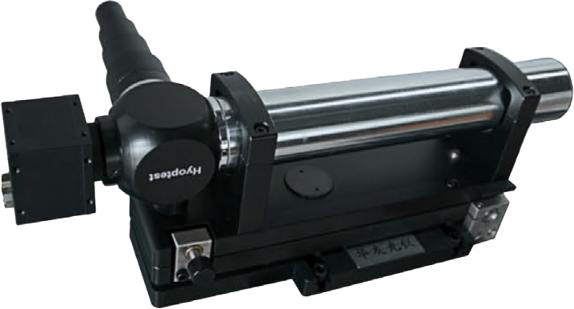
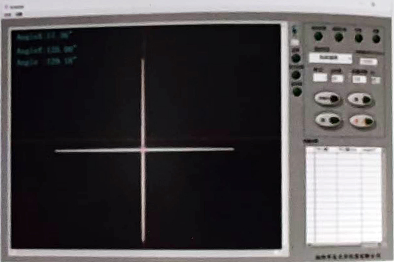

///
EAC系列
高精度光电自准直仪(测角仪)
HIGT PRECISION PHOTOELECTRIC AUTOCOLLIMATOR

EAC光电自准直仪(Electronic Autocollimator)是一款高精度的非接触式角度测量仪器，主要适用于测 量光学加工行业中光学元件的角度、平行度、侧垂测量，精密装配中系统角度对准，以及机加工上机床平面度、平行度的定标调整,设备稳定度(温度或振动影响)的测量等等。按照测量精度的不同EAC系列有:EAC-200,EAC-300,和EAC-500三款。
产品特点PRODUCT FEATURES
- 小巧轻盈、使用方便、测量精确
- 超高测量精度和重复精度
- 通过USB高速连接，支持高配测量
- 可自由切换多种测量方法及单位显示
- 超高测量精度和重复精度
- 通过USB高速连接，支持高配测量
- 可自由切换多种测量方法及单位显示

| 型号 | EAC-200 | EAC-300 | EAC-500 | 仪器主要部件 | |
| 品径(mm) | 38 | 42 | 60 | 光源：LED或冷光源 | 外接口：USB接口 |
| 视场范围 | 3100''X2400'' | 2200''X1800'' | 1200''X1000'' | 高精度调整台及测量软件等 | |
| 分辨率 | 0.1'' | 0.05'' | 0.01'' | 传感器：CCD或(CMOS)工业相机 | |
| 重复精度 | 1'' | 0.8'' | 0.3'' | 辅助激光找像器(可选项) | |
| 测量精度 | 1.3'' | 1'' | 0.5'' | 多维可调反射镜(可选项) | |
获取详细参数
查看视频解说